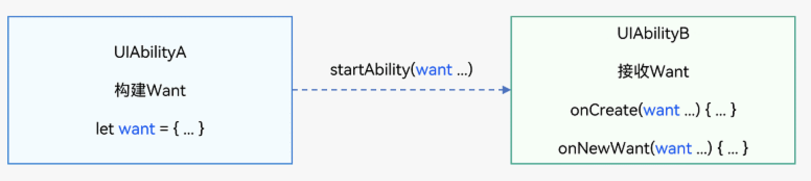
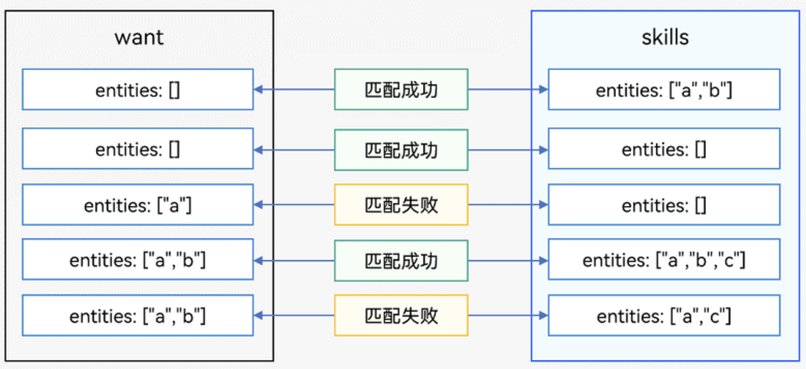
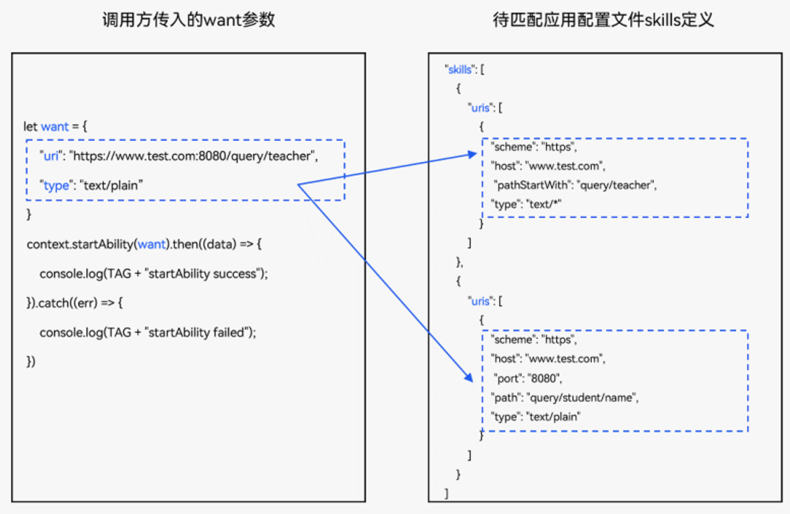

want显式隐式规则
概述
1 | want是对象间信息传递的载体，可以用于应用组件间的信息传递。其使用场景之一是作为startAbility()的参数，包含了指定的启动目标以及启动时需携带的相关数据，如bundleName和abilityName字段分别指明目标Ability所在应用的包名以及对应包内的Ability名称。当UIAbilityA启动UIAbilityB并需要传入一些数据给UIAbilityB时，Want可以作为一个载体将数据传给UIAbilityB。 |

want 类型
显式want
1 | 在启动Ability时指定了abilityName和bundleName的Want称为显式Want。 |
1 | let wantInfo = { |
显式Want匹配原理
| 名称 | 类型 | 匹配项 | 必选 | 规则 |
|---|---|---|---|---|
| deviceId | string | 是 | 否 | 留空将仅匹配本设备内Ability。 |
| bundleName | string | 是 | 是 | 如果指定abilityName，而不指定bundleName，则匹配失败。 |
| moduleName | string | 是 | 否 | 留空时当同一个应用内存在多个模块且模块间存在重名Ability，将默认匹配第一个。 |
| abilityName | string | 是 | 是 | 该字段必须设置表示显式匹配。 |
| uri | string | 否 | 否 | 系统匹配时将忽略该参数，但仍可作为参数传递给目标Ability。 |
| type | string | 否 | 否 | 系统匹配时将忽略该参数，但仍可作为参数传递给目标Ability。 |
| action | string | 否 | 否 | 系统匹配时将忽略该参数，但仍可作为参数传递给目标Ability。 |
| entities | Array <string> |
否 | 否 | 系统匹配时将忽略该参数，但仍可作为参数传递给目标Ability。 |
| flags | number | 否 | 否 | 不参与匹配，直接传递给系统处理，一般用来设置运行态信息，例如URI数据授权等。 |
| parameters | {[key: string]: any} | 否 | 否 | 不参与匹配，应用自定义数据将直接传递给目标Ability。 |
隐式want
1 | 在启动UIAbility时未指定abilityName的Want称为隐式Want。 |
1 | let wantInfo = { |
隐式Want匹配原理
| 名称 | 类型 | 匹配项 | 必选 | 规则 |
|---|---|---|---|---|
| deviceId | string | 是 | 否 | 跨设备目前不支持隐式调用。说明当前版本暂不支持跨设备能力。 |
| abilityName | string | 否 | 否 | 该字段必须留空表示隐式匹配。 |
| bundleName | string | 是 | 否 | - 声明bundleName时，隐式搜索将仅限于对应应用包内。- 声明bundleName与moduleName时，隐式搜索将仅限于对应应用的对应Module内。- 单独声明moduleName时，该字段无效。- 同时声明bundleName与moduleName时，隐式搜索将仅限于对应应用包内的对应模块内。这些字段将用来隐式匹配，具体规则可参考隐式Want匹配原理详解。 |
| moduleName | string | 是 | 否 | - |
| uri | string | 是 | 否 | - |
| type | string | 是 | 否 | - |
| action | string | 是 | 否 | - |
| entities | Array <string> |
是 | 否 | - |
| flags | number | 否 | 否 | 不参与匹配，直接传递给系统处理，一般用来设置运行态信息，例如URI数据授权等。 |
| parameters | {[key: string]: any} | 否 | 否 | 不参与匹配，应用自定义数据将直接传递给目标Ability。 |
隐式Want匹配原理详解
从隐式Want的定义，可得知：
- 调用方传入的want参数，表明调用方需要执行的操作，并提供相关数据以及其他应用类型限制。
- 待匹配Ability的skills配置，声明其具备的能力（module.json5配置文件中的skills标签 参数）。
系统将调用方传入的want参数（包含action、entities、uri和type属性）与已安装待匹配的应用Ability的skills配置（包含actions、entities、uris和type属性）依次进行匹配。当四个属性匹配均通过，则此应用才会被应用选择器展示给用户进行选择。
want参数的action匹配规则
将调用方传入的want参数的action与待匹配Ability的skills配置中的actions进行匹配。
- 调用方传入的want参数的action为空，待匹配Ability的skills配置中的actions为空，则action匹配失败。
- 调用方传入的want参数的action不为空，待匹配Ability的skills配置中的actions为空，则action匹配失败。
- 调用方传入的want参数的action为空，待匹配Ability的skills配置中的actions不为空，则action匹配成功。
- 调用方传入的want参数的action不为空，待匹配Ability的skills配置中的actions不为空且包含调用方传入的want参数的action，则action匹配成功。
- 调用方传入的want参数的action不为空，待匹配Ability的skills配置中的actions不为空且不包含调用方传入的want参数的action，则action匹配失败。
want参数的entities匹配规则
将调用方传入的want参数的entities与待匹配Ability的skills配置中的entities进行匹配。
- 调用方传入的want参数的entities为空，待匹配Ability的skills配置中的entities不为空，则entities匹配成功。
- 调用方传入的want参数的entities为空，待匹配Ability的skills配置中的entities为空，则entities匹配成功。
- 调用方传入的want参数的entities不为空，待匹配Ability的skills配置中的entities为空，则entities匹配失败。
- 调用方传入的want参数的entities不为空，待匹配Ability的skills配置中的entities不为空且包含调用方传入的want参数的entities，则entities匹配成功。
- 调用方传入的want参数的entities不为空，待匹配Ability的skills配置中的entities不为空且不完全包含调用方传入的want参数的entities，则entities匹配失败。

want参数的uri和type匹配规则
调用方传入的want参数中设置uri和type参数发起组件启动请求，系统会遍历当前系统已安装的组件列表，并逐个匹配待匹配Ability的skills配置中的uris数组，如果待匹配Ability的skills配置中的uris数组中只要有一个可以匹配调用方传入的want参数中设置的uri和type即为匹配成功。

Want参数说明
| 名称 | 读写属性 | 类型 | 必填 | 描述 |
|---|---|---|---|---|
| deviceId | 只读 | string | 否 | 表示目标Ability所在设备ID。如果未设置该字段，则表明本设备。 |
| bundleName | 只读 | string | 否 | 表示目标Ability所在应用名称。 |
| moduleName | 只读 | string | 否 | 表示目标Ability所属的模块名称。 |
| abilityName | 只读 | string | 否 | 表示目标Ability名称。如果未设置该字段，则该Want为隐式。如果在Want中同时指定了bundleName，moduleName和abilityName，则Want可以直接匹配到指定的Ability。 |
| uri | 只读 | string | 否 | 表示携带的数据，一般配合type使用，指明待处理的数据类型。如果在Want中指定了uri，则Want将匹配指定的Uri信息，包括scheme, schemeSpecificPart, authority和path信息。 |
| type | 只读 | string | 否 | 表示携带数据类型，使用MIME类型规范。例如：”text/plain”、”image/*”等。 |
| action | 只读 | string | 否 | 表示要执行的通用操作（如：查看、分享、应用详情）。在隐式Want中，您可定义该字段，配合uri或parameters来表示对数据要执行的操作。如打开，查看该uri数据。例如，当uri为一段网址，action为ohos.want.action.viewData则表示匹配可查看该网址的Ability。 |
| entities | 只读 | Array <string> |
否 | 表示目标Ability额外的类别信息（如：浏览器，视频播放器），在隐式Want中是对action的补充。在隐式Want中，您可定义该字段，来过滤匹配UIAbility类别，如必须是浏览器。例如，在action字段的举例中，可存在多个应用声明了支持查看网址的操作，其中有应用为普通社交应用，有的为浏览器应用，您可通过entity.system.browsable过滤掉非浏览器的其他应用。 |
| flags | 只读 | number | 否 | 表示处理Want的方式。例如通过wantConstant.Flags.FLAG_ABILITY_CONTINUATION表示是否以设备间迁移方式启动Ability。 |
| parameters | 只读 | {[key: string]: any} | 否 | 此参数用于传递自定义数据，通过用户自定义的键值对进行数据填充，具体支持的数据类型如Want API所示。 |
说明
根据系统中待匹配Ability的匹配情况不同，使用隐式Want启动Ability时会出现以下三种情况。
- 未匹配到满足条件的Ability：启动失败。
- 匹配到一个满足条件的Ability：直接启动该Ability。
- 匹配到多个满足条件的Ability（UIAbility）：弹出选择框让用户选择。
常见action与entities
action
表示调用方要执行的通用操作（如查看、分享、应用详情）。在隐式Want中，您可定义该字段，配合uri或parameters来表示对数据要执行的操作。如打开，查看该uri数据。例如，当uri为一段网址，action为ohos.want.action.viewData则表示匹配可查看该网址的Ability。在Want内声明action字段表示希望被调用方应用支持声明的操作。在被调用方应用配置文件skills字段内声明actions表示该应用支持声明操作。
常见action
- ACTION_HOME：启动应用入口组件的动作，需要和ENTITY_HOME配合使用；系统桌面应用图标就是显式的入口组件，点击也是启动入口组件；入口组件可以配置多个。
- ACTION_CHOOSE：选择本地资源数据，例如联系人、相册等；系统一般对不同类型的数据有对应的Picker应用，例如联系人和图库。
- ACTION_VIEW_DATA：查看数据，当使用网址uri时，则表示显示该网址对应的内容。
- ACTION_VIEW_MULTIPLE_DATA：发送多个数据记录的操作。
entities
表示目标Ability的类别信息（如浏览器、视频播放器），在隐式Want中是对action的补充。在隐式Want中，开发者可定义该字段，来过滤匹配应用的类别，例如必须是浏览器。在Want内声明entities字段表示希望被调用方应用属于声明的类别。在被调用方应用配置文件skills字段内声明entites表示该应用支持的类别。
常用entities
- ENTITY_DEFAULT：默认类别无实际意义。
- ENTITY_HOME：主屏幕有图标点击入口类别。
- ENTITY_BROWSABLE：指示浏览器类别。
示例
1 | // 打开应用设置页面 |